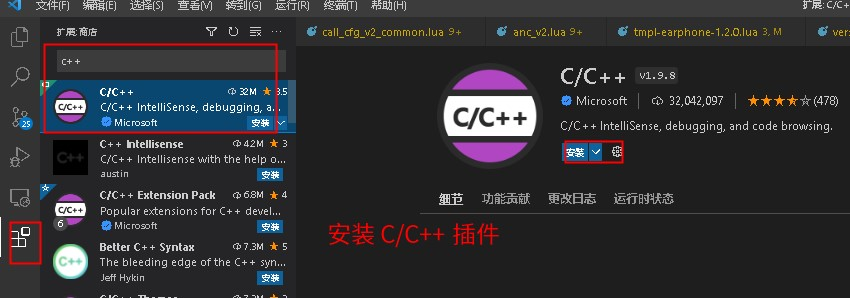
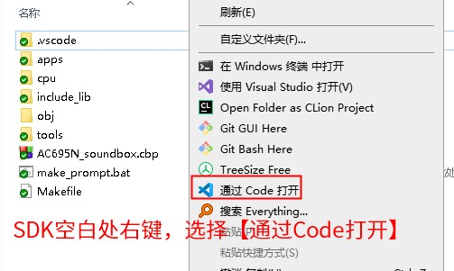
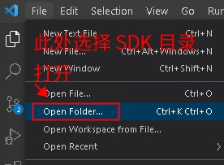
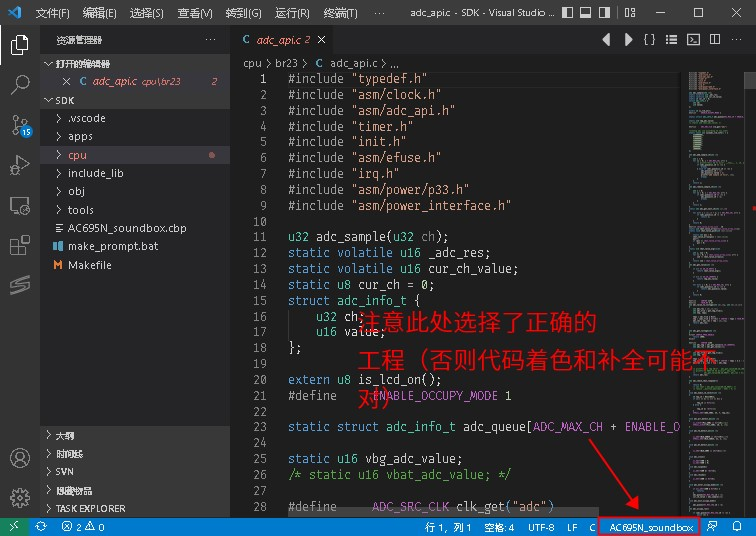

2.3. 使用 VSCode 进行编译
较新的 SDK 默认都会支持使用 VSCode 进行开发编译（包括 Windows 以及 Linux）。
VSCode 下编译是通过调用make命令实现的。Linux下需要参考使用 make 进行编译的步骤先进行配置。
2.3.1. VSCode 设置步骤
下面以 AC695N 的 SDK 为例进行说明：
2.3.1.1. 安装必要的插件Task Explorer和C/C++
如下图所示：


2.3.1.2. 使用 VSCode 打开 SDK 目录
如下图所示：

Note
如果在右键菜单中，未能找到【通过 Code 打开】，这个有以下几种可能：
你未安装 VSCode
在安装 VSCode 的时候，未勾选在右键菜单栏显示的选项
你可以直接打开 VSCode，然后再 VSCode 菜单栏处选择打开目录，并选择 SDK 目录打开，如下图所示：


2.3.1.3. 选择对应的 task 进行编译
如下图所示：

SDK 目录下的 .vscode 目录里面包含了tasks.json以及c_cpp_properties.json文件。这两个是 VSCode 所需要的配置。更多可以参考这里的设置。

2.3.2. 排查 VSCode 编译出错问题
VSCode 编译是通过调用 Makefile 实现的，所以先检查 Makefile 是否正常。参考：使用 make 进行编译 以及 排查使用 Makefile 编译出错的步骤
检查上述的插件是否正常安装。
Important
注意要通过插件来运行编译任务。这是因为编译过程中，需要使用到一些额外的工具，例如 mkdir_win, make 等。
这些工具一般跟随 SDK 发布（通常在 tools 目录下）。在编译之前，需要将这些工具所在的目录，添加到 %PATH% 环境变量中。
这个是通过 .vscode/winmk.bat 脚本来完成的。
假如你希望在 vscode 自带的终端中编译，请按照 .vscode/winmk.bat 的调用方式来编译。
2.3.3. VScode编译的注意事项
插件安装完成后，编辑器状态栏的区分设备型号的选项及C语言的语法着色、代码高亮、定义引用查找跳转无法使用
可能原因及解决办法：
Note
STM32-cube-clange 等有关STM32型单片机开发的插件也自带了一个intelli引擎，
会与VScode标准的C/C++的引擎冲突，只能二选其一，而STM32的插件一般会把标准C/C++的引擎关掉。
选择芯片型号的功能，是由VScode标准的”C/C++环境“提供，恢复插件使能即可。
一般插件安装时会主动提示冲突，让你选择”关掉“还是”无视（不再弹窗）“，这时得注意查看和排查是否是已安装的其他插件有冲突。
2.3.4. 常见问题
Note
如果编译报错，参考：常见问题以及处理方法
如果下载程序报错，参考：为什么无法下载程序